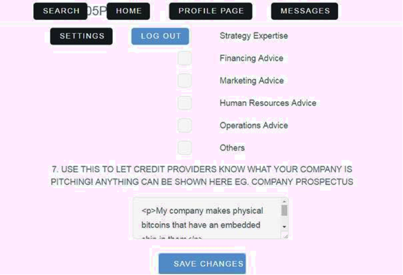

ATOS-3
Anyone can sign up as a user on the Alternative Financing Portal. There are two types of users:
On the homepage of the portal, there are two links “Sign up now as a credit provider!” and “Sign up now as a small and medium enterprise!”. Click either one of these links depending on what type of user you are signing up as. This will then take you the sign-up page where you will have to enter your email, address, contact details and answer a list of questions as well. Click the “Submit” button once you are done.
You will then be directed to the homepage with a banner stating “Welcome! You have signed up successfully.”
Click on the “Settings” tab found on top of the webpage after you have signed in. You will be able to change your email, address and contact number here. Enter your new information for any of those fields. For the fields you would want to remain the same, leave the information unchanged. Enter your password and confirm your password, then click “Save Changes”. If your changes were successfully saved, a banner would appear stating “Settings have been successfully saved.”
Click on the “Search” tab found on top of the webpage after you have signed in. Please note that search results are displayed automatically and there is no “Search” or “Submit” button to press for results to be shown.
Enter any phrase in the first search field that is titled “Search”. You can also sort the users based on:
The next search criteria “Are you looking for a SME or credit provider?” will display users depending on the organisation type. If “SME” is chosen, then only users who have signed up as SMEs will be displayed and vice versa if “Credit Provider” is chosen.
Following this, there are options to narrow down the SMEs or credit providers even further. If “Credit Provider” was previously selected, then the questions in box A will help to refine the search for a suitable credit provider. If “SME” was previously selected, then the question in box B will help to refine the search for a suitable SME.
If you would like to learn more about a specific user, just click on the name of the organisation which serves as a link to that specific user’ profile page.
Should you try to access the search function without signing in, the page will direct you to sign up for an account. This is to ensure only users with an account can utilise this function.
Click on the “Profile Page” tab found on top of the webpage after you have signed in. This page displays all your information including your email, address and contact number. Other users will be able to view this page.
To edit this page, scroll to the bottom of the page and click on the link “Edit Profile”. This will then direct you to a page where you can make any changes to the information displayed on your profile page except for your address, email and contact number (these will have to be changed through the “Settings” tab).
For some search criteria (eg. Nature of Funding, Nature of Financing, Other Support Offered, Other Support Sought) where multiple selections can be made, the current selection will be shown in red and bold. To make changes to these criteria, simply tick the relevant checkboxes to choose your new selection or leave it empty to keep it unchanged.
Click on the “Save Changes” at the bottom of the page once you are satisfied with your edits. A banner would appear stating that “Profile has been successfully updated.” if your changes were saved successfully.
Click on the “Messages” tab found on top of the webpage after you have signed in. There is a list of “Registered Users” where you can find any user. Click on the “Send Message” button next to their names to send them a message. A chat window will pop up on the webpage with the user’s name as the header. There is a text box at the bottom of the window. Type your message in that and press the enter button on your keyboard to send the message. It will appear instantly in the chat window.
There is another column titled “Your Conversations” below the list of “Registered Users”. This shows your current and previous conversations with any user you have spoken to. Simply click on any of the conversation to view it.
Depending on the zoom view of your web browser, the layout of the application may look disordered as seen as the image below.
A quick fix would be to press the command button and the – button for Mac users to zoom out so that the buttons in the header will be arranged in a single line. The same can be achieved for Windows users by pressing the Windows button and – button.